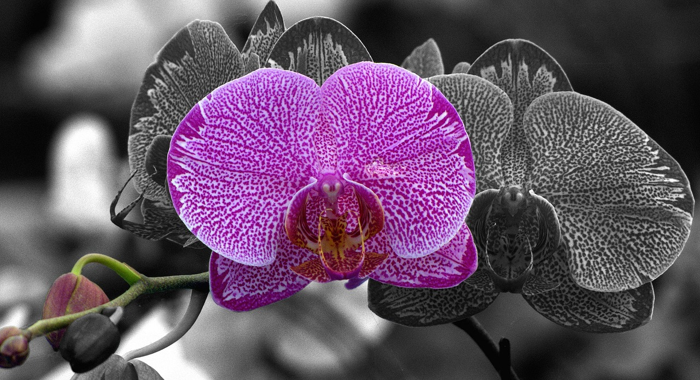

About Orchid Flowers
The Orchidaceae are a diverse and widespread family of flowering plants,
with blooms that are often colourful and fragrant, commonly known as the orchid family.
Along with the Asteraceae, they are one of the two largest families of flowering plants.
Species
-
Moth orchid
 -
Vanda coerulea

-
Waling-waling

-
Vanda tricolor

Features
Orchids have some unique features which help them in the evolutionary race. They produce masses of pollen (which improves the chances of pollination), very light seeds (which makes them easier to spread) and can grow on other plants using them to support their own growth.